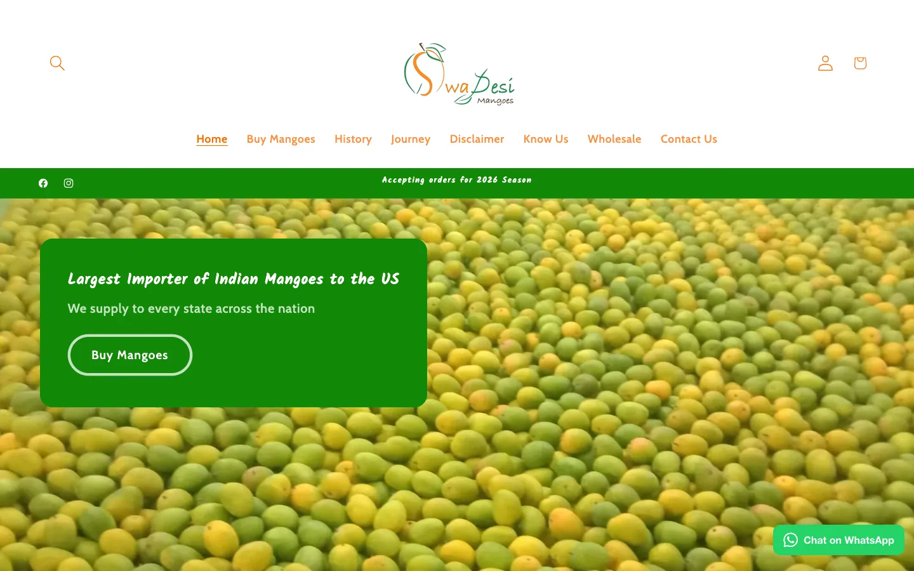

Client storefront
Swadesi Mangoes
A mango shop’s storefront, rebuilt in Next.js with Shopify behind it.
- swadesimangoes.com
- Private repo

The numbers
- 22 of 24commits are mine
- 14mango varieties in the 2026 season
- 8pages on the store I started from
The problem
A seasonal business whose shop window is open a few months a year.
Swadesi Mangoes imports Indian mangoes and ships to every US state. The store ran on a stock Shopify theme with 8 pages: home, buy mangoes, history, journey, disclaimer, know us, wholesale and contact. It sold 14 varieties in the 2026 season, and most were sold out at any given time. Sold-out items, a perishable-goods policy and a wholesale channel all needed to be clear to a visitor in seconds.
Approach
Keep Shopify for what it does well, which is the catalog, cart and checkout, and rebuild everything the visitor sees.
- A Next.js storefront that reads products from Shopify's Storefront API and refreshes them every 60 seconds.
- Pages for the story, not just the catalog: a journey page from farm to table, an about page, wholesale and contact forms.
- A cart drawer and a sticky add-to-cart bar, so buying never takes a page load.
- A season switch and an urgency banner, so the store can say when orders are open.
How it fits together
- Next.js storefrontWhat people see: pages, cart drawer, forms
- Shopify Storefront APIProducts and the cart, read every 60 seconds
- Shopify checkoutPayment and the order stay in Shopify
The cart is created through Shopify, and the Checkout button hands the shopper to Shopify's own checkout. That means payment details never touch the custom site, and the owner keeps managing orders where they already do.
Results
| What | Number |
|---|---|
| Commits that are mine | 22 of 24 |
| Varieties in the 2026 season | 14 |
| Pages on the store I started from | 8 |
| Build | Next.js and Tailwind, with Shopify behind it |
The live store in the screens below is the one running today. It still looks like the Shopify theme, so my rebuild may not be live there yet.
What I owned
- Rebuilt the storefront in Next.js, with Shopify behind it.
- Built the cart drawer, product pages, wholesale and contact forms, and the policy pages.
- Connected products and the cart to the Shopify Storefront API.
What I learned
- Leave checkout to the platform that already handles payments and tax. Rebuild the part where the brand shows.
- For a seasonal shop, the empty state matters as much as the full one. Sold-out and off-season pages need design too.
Screens